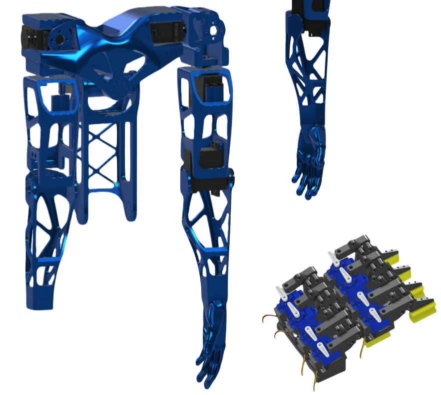
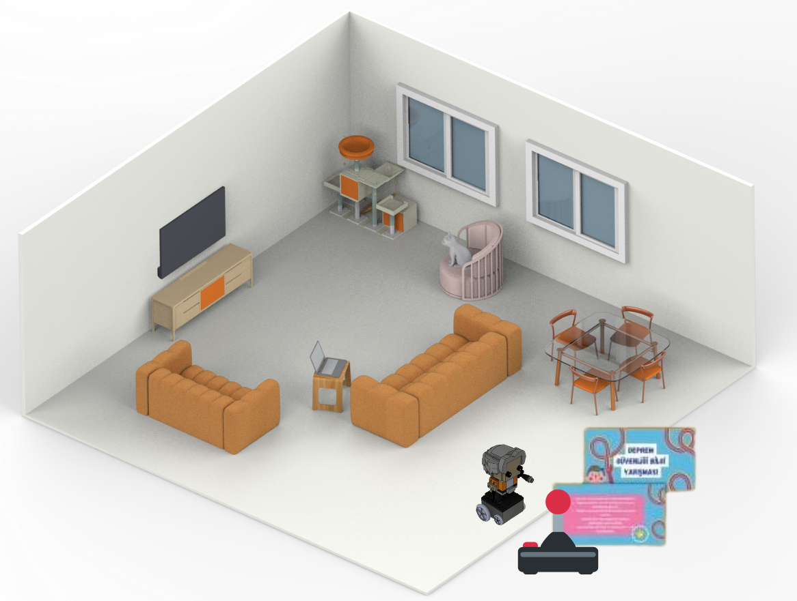
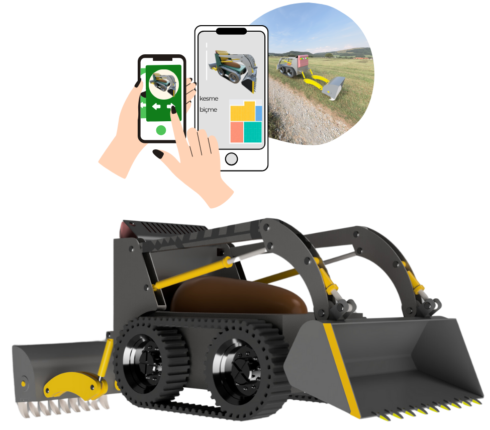
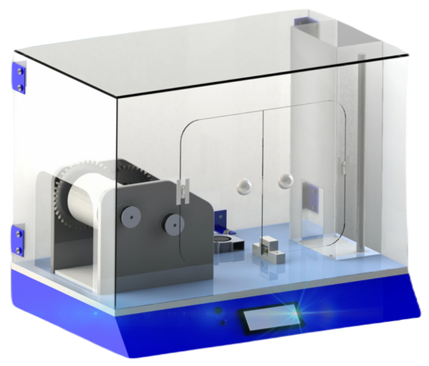
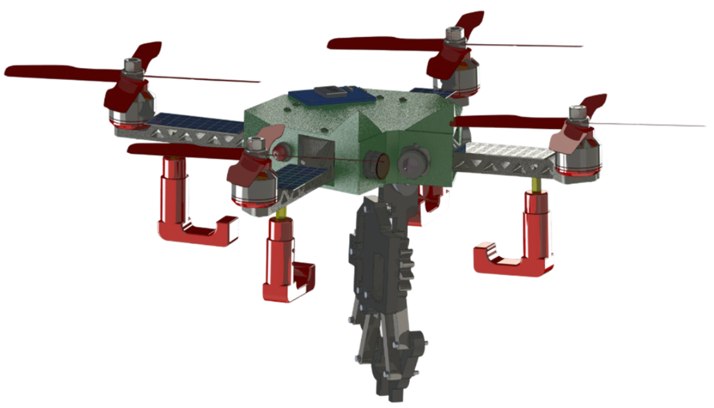
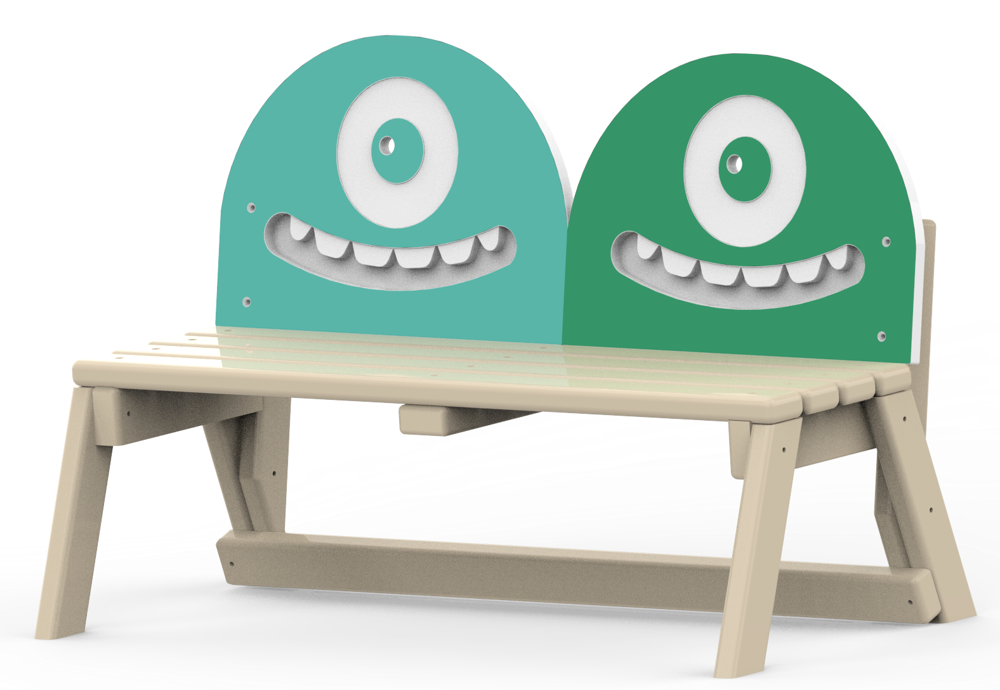
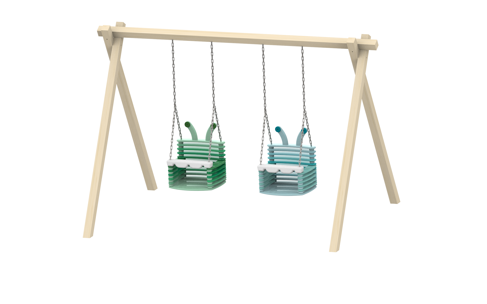

Projelerim

Mekanik Kol Tasarımı
Şubat 2024
4 kişilik bir ekip ile teknofest projesi olarak kolunu kullanma yeteneğini kaybetmiş insanlar için geliştirdiğimiz bu prototipin mekanik tasarım ve yazılımından sorumluydum.

Deprepoly
Kasım 2023
Depreme karşı çocukları bilinçlendirmek amaçlı Endüstriyel Tasarım Mühendisliği Ürün Tasarımı ve Geliştirme dersi kapsamında 6 kişilik ekip olarak yaptığımız bu projenin yazılım, mekanik tasarım ve render görsellerinden sorumluydum.

Otonom Tarım Aracı
Ocak 2024
Endüstriyel Tasarım Mühendisliği X İçin Tasarım dersi kapsamında 7 kişilik bir ekip ile uygulama üzerinden kontrol edilebilir bir şekilde tasarladığımız bu otonom tarım aracı projesinde teknik resim hazırlamaktan sorumluydum. Projenin amacı doğru bağlantı elemanlarını uygun konumda kullanabilmemizi sağlamaktı.

Eco-0 Spire
Nisan 2024
Uygulamalı Ürün ve Sistem Tasarımı dersi kapsamında 7 kişilik ekip olarak geliştirdiğimiz projenin yazılım ve mekanizma tasarımından sorumluydum. Projenin amacı var olan bir sistemi geliştirerek daha stabil çalışan bir ürün haline getirmekti.

Otonom Güvenlik Drone'u
Şubat 2025
Tez projem olarak insanların girmesi sakıncalı olan alanlara girip tehlikeli maddeyi taşımak ya da imha etmekle görevli bir otonom drone tasarladım.

Sevimli Canavar Bank Tasarımı
Temmuz 2025
Umut Tasarım ve Kent Ekipmanları firmasında geçirdiğim Aday Mühendislik döneminde firma bünyesinde geliştirilen bir proje için canavar temalı bir bank tasarımı yaptım. Üretilebilir bir şekilde tasarladığım ilk projem olması açısından benim için önemli bir yere sahip olduğunu söyleyebilirim.

Sevimli Canavar Salıncak Tasarımı
Temmuz 2025
Umut Tasarım ve Kent Ekipmanları firmasındaki Aday Mühendislik sürecimde, firma bünyesinde geliştirilen bir proje için sevimli canavar temasına uygun olacak bir salıncak tasarımı yaptım.